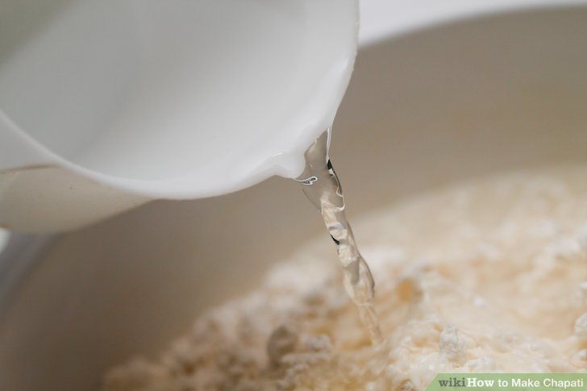
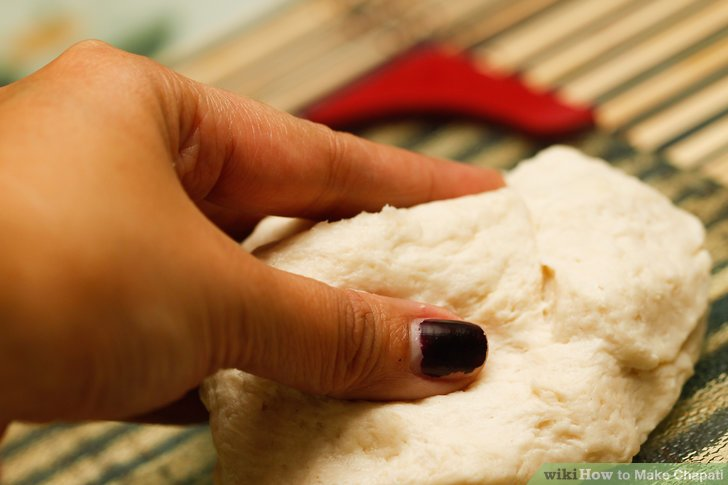
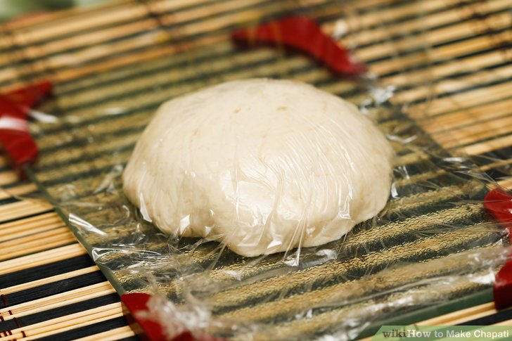
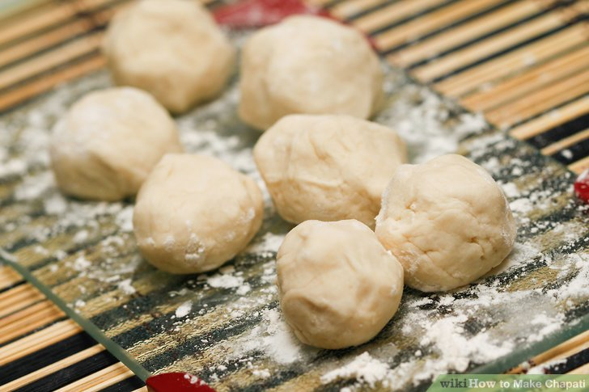
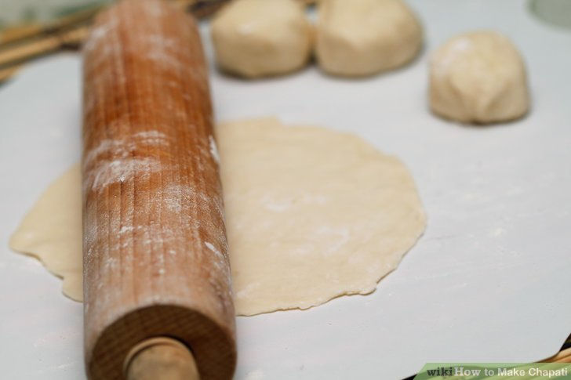
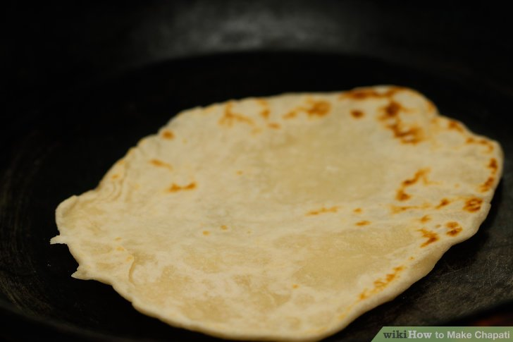
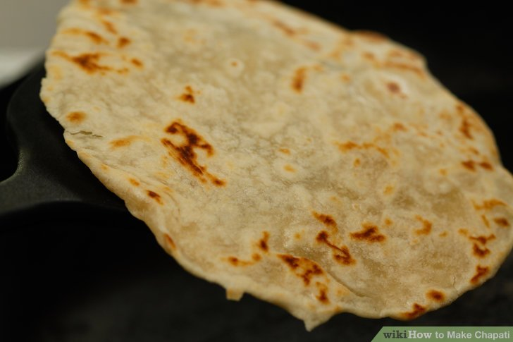
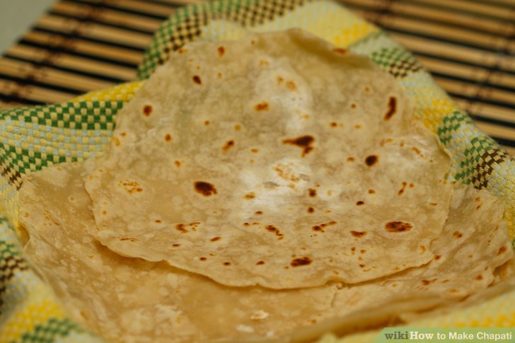
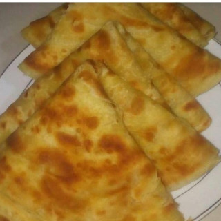

Chapati is a common dish in kenya. It is usually made in special occassions like holidays or events.
I am going to show you how to make the best chapatis
Hope you enjoy and learn

1. Pour the wheat flour, salt, and sugar into a bowl and mix the ingredients together
2. Add ½ a cup of water to the flour mixture and stir the mixture until it's soft and supple
3. Add the remaining water slowly, stirring until it's fully combined
4. Place the dough into an oiled bowl and cover it for 25 minutes.
5. Divide the dough into 10-12 small balls, and dip them into flour
6. Roll the dough with a rolling pin until the balls resemble thin, round pancakes.
7. Heat a heavy frying pan, tawa, or griddle over medium heat and cook each chapati on both sides
8. Remove the chapati from the heat, and wrap it in a towel until they are all ready to serve
9. Serve and enjoy the dish
